About Me
I am a passionate Computer Science and Engineering student with a strong interest in building impactful and scalable software solutions. With a solid foundation in backend development, problem-solving, and system design, I enjoy transforming complex ideas into efficient and reliable applications. My experience spans algorithm design, full-stack development, and modern technologies, where I focus on writing clean, maintainable, and performance-oriented code. I am particularly interested in areas such as Artificial Intelligence, Internet of Things (IoT), and cloud-based systems, and I continuously strive to expand my technical skill set. I see every challengeas an opportunity to grow and innovate. I am always eager to collaborate, learn from others, and contribute to meaningful projects that create real-world impact.
Visit My GitHub 🤗 Visit My Hugging FaceEducation
Secondary School Certificate (SSC)
Class of 2019
Group: Science
School: Police Lines High School, Faridpur, Bangladesh
GPA: 5.00 (Out of 5.00)
A two years program in science group. My most favourite subjects include Physics, Chemistry and Mathmatics.
Higher Secondary Certificate (HSC)
Class of 2021
Group: Science
College: Govt Yasin College, Faridpur, Bangladesh
GPA: 4.75 (Out of 5.00)
A two years program in science group. My most favourite subjects include Physics, Chemistry and Mathmatics.
Bachelor of Science in CSE (Ongoing)
Batch: Class of 2023 — Present
Department: Computer Science and Engineering
University: University of Asia Pacific (UAP), Dhaka, Bangladesh
Current CGPA: 3.86 (Out of 4.00)
Thesis Area: Computer Vision and NLP
A four-year Bachelor of Science in Engineering program (currently ongoing). Actively involved in academic and extracurricular activities.
Master of Science in CSE (Future Plan)
Status: Not yet enrolled
Intended Field: Computer Science and Engineering
Possible Thesis Areas: Computer Vision, NLP, Blockchain
The Master of Science (M.Sc.) in CSE typically includes advanced-level coursework and research.
My Skills
Programming Languages
Java
Python
C Programming
C++
JavaScript
Assembly
Libraries & Tools
Jupyter Notebook
Conda & Virtual Environments
Selenium & Postman
Cisco Packet Tracer
React & Tailwind CSS
LaTeX
JavaFX
Machine Learning & Deep Learning
NumPy
Pandas
Scikit-learn
TensorFlow
Keras
PyTorch
OpenCV
Database Technologies
MySQL
MS SQL
MongoDB
Frameworks
Django
Next.js
MERN Dev
React Native
Other Skills
Object-Oriented Programming (OOP)
Linux
Data Structures and Algorithms
Software Design Patterns
Microcontrollers & IoT Development
Machine Learning Fundamentals
Classification & Regression
Clustering & Unsupervised Learning
k-Nearest Neighbors (kNN)
Artificial Neural Networks (ANN)
Convolutional Neural Networks (CNN)
Recurrent Neural Networks (RNN)
Git & GitHub
Project Management
Teamwork
Time Management
Leadership
My Work
Projects
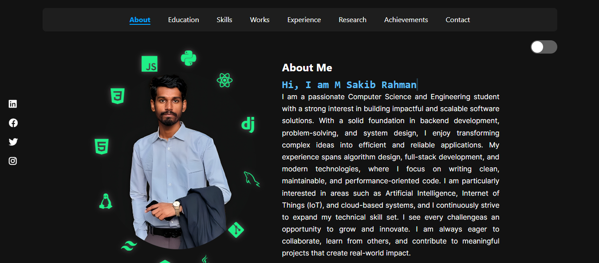
Portfolio Website
My personal portfolio website professionally showcasing my projects, technical skills, experience, creativity, and overall development journey.
View on GitHub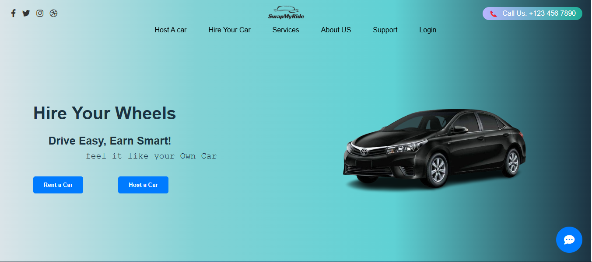
Hire Your Wheels
Hire Your Wheels website developed to offer seamless, user-friendly, and efficient online car rental services nationwide.
View on GitHub
ShareBite
ShareBite website connects donors with charities to reduce food waste and distribute meals to communities effectively and sustainably.
View on GitHub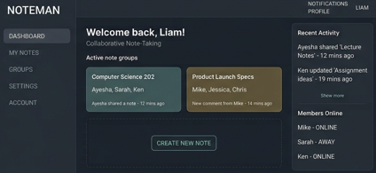
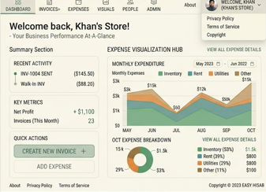
Easy Hisab
Web app designed for easy invoicing and automated tax management specifically for small businesses.
View on GitHub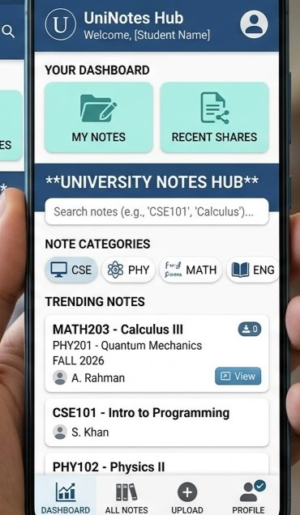
Note Man
Android application developed to efficiently manage, Web app to efficiently share university notes among all students.
View on GitHub
MessBill
Android application developed to efficiently calculate, track, and manage all mess bills for students effectively.
View on GitHub
Travel Agency
Travel agency management system designed and implemented efficiently using C++ programming language.
View on GitHub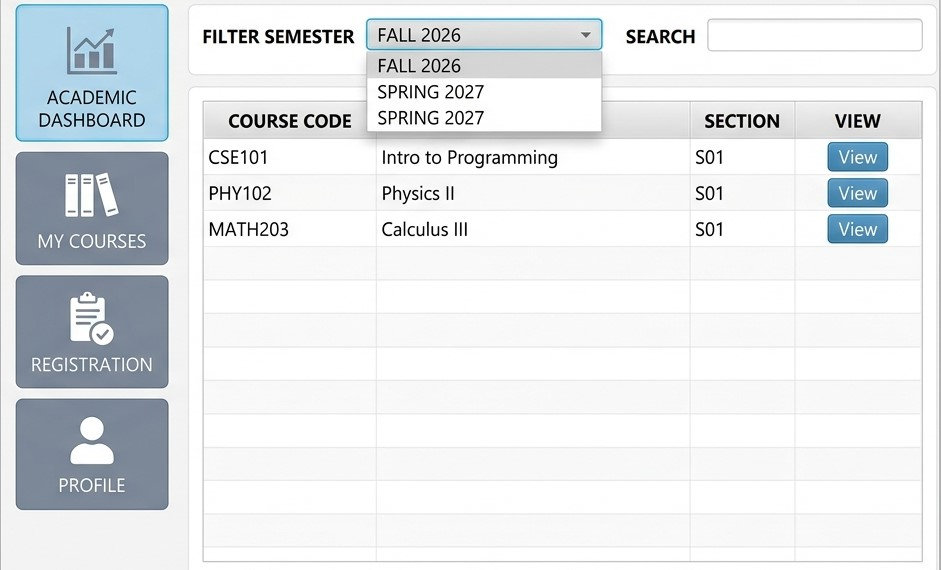
(u-cam) System
Windows application using JavaFX with EMS(u-cam) integration.
View on GitHub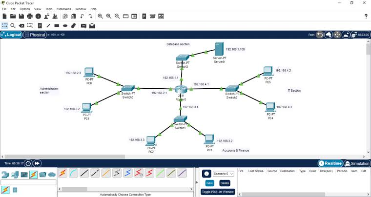
Network Topology
Created complete network topology implementing routing protocols and VLANs.
View on GitHub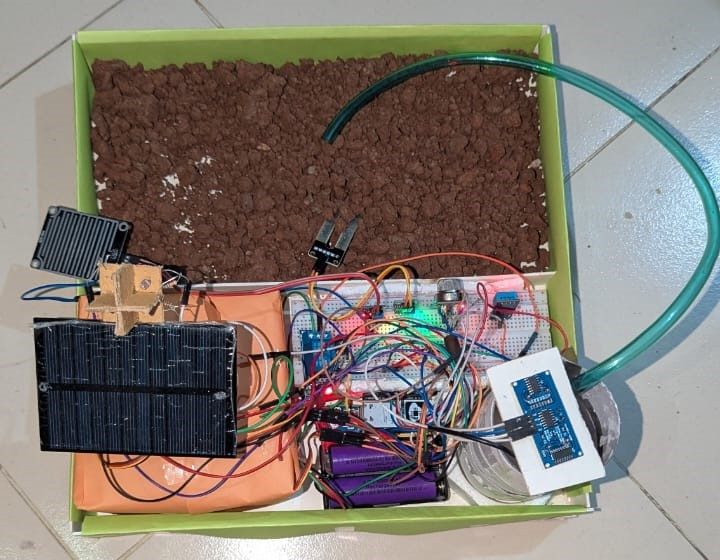
Smart Agro With IoT
IoT-based smart agriculture system using microcontrollers for automation.
View on GitHub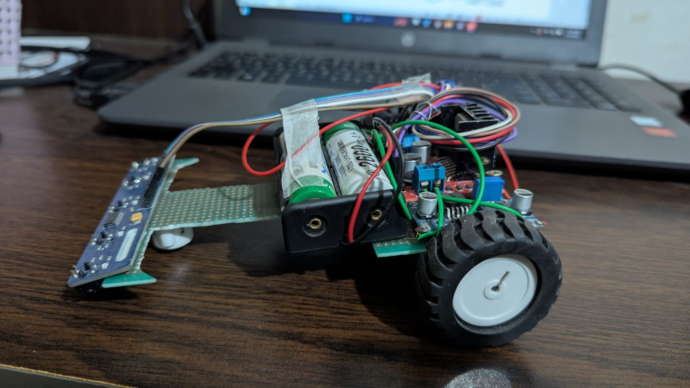
Line Following Robot
Line following robot using microcontrollers for autonomous navigation.
View on GitHub
Selenium Testing for Easy Hisab
Test the web application using Selenium WebDriver and various libraries.
View on GitHub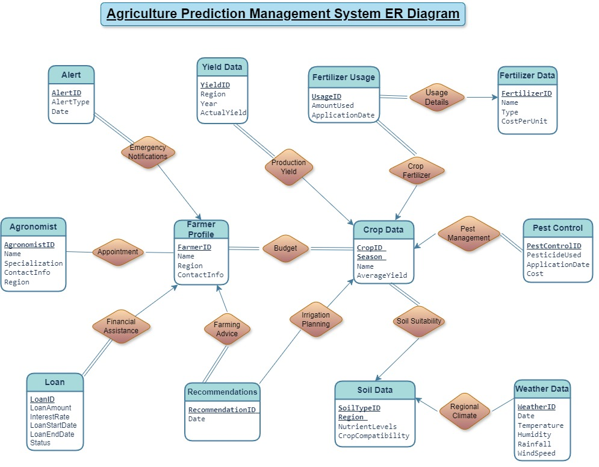
Agriculture Data Management
Managed data for the Smart Agriculture system using MS SQL databases.
View on GitHub
Documentation With LaTeX
Smart agriculture system using microcontrollers and IoT technology effectively.
View on GitHubAI / ML / DL Projects
ML & DL Basics
ML Fundamentals, Classification, Regression, Clustering, kNN, ANN, CNN, RNN.
View on GitHubFace Recognition
Face recognition system built using pre-trained models and computer vision libraries.
View on GitHubAI Study Monitor
An AI-powered study monitoring tool that tracks focus.
View on GitHubGesture Temple Run
A gesture-controlled version of the Temple Run game using real-time hand tracking.
View on GitHubInvisibility Cloak
A real-time project that recreates the classic "invisibility cloak" effect using color detection and masking.
View on GitHubMulti-Assistant App
An application integrating multiple OpenAI-powered assistants for different task-specific use cases.
View on GitHubInteractive 3D Particle
An Real-Time interactive 3D particle system that responds in real time to hand and body gestures.
View on GitHubVirtual Keyboard AI
A smart virtual on-screen keyboard is operated entirely through real-time hand gesture recognition system.
View on GitHubBanglaAccento: Bangla Regional Dialect Speech Recognition
End-to-end speech-to-speech system for Bangla regional dialects (Barishal, Noakhali, Rangpur, Sylhet, Chittagong), built on 6 hours of curated dialectal speech data.
View on GitHubVisual Grounding Repair for MLLMs
Detects, diagnoses, and repairs grounding hallucinations in multimodal LLMs (LLaVA, Qwen2.5-VL, InternVL) using a lightweight repair module.
View on GitHubShutki Vision: Traditional Bengali Dried Fish Dataset
A curated 1,537-image dataset across 4 dried fish types under 8 backgrounds and 4 lighting conditions, with a classification model achieving 98.94% accuracy.
View on GitHubMy Experience
Academic Web & App Development Projects
Full-Stack Development with IoT
Develop responsive, interactive, and user-friendly web applications using HTML, CSS,JavaScript, and frameworks like React or Vue.js.Optimize website performance for faster load times and better user experience.Ensure cross-browser compatibility and mobile responsiveness.Collaborate with UI/UX designers to translate designs into functional web pages.
Machine Learning & Deep Learning Projects
Enhancing AI/ML skills through practical projects and applications.
ML/DL Development: Worked on projects involving regression, classification, CNNs, and RNNs. Data Handling: Collected, cleaned, and analyzed datasets for training models. Model Deployment: Integrated ML/DL models into applications for predictive analytics and automation. Tools & Frameworks: Python, TensorFlow, Keras, PyTorch, Scikit-learn, Jupyter Notebook.
Full-Stack Developer
Freelancer.com
Frontend Development: Design and develop interactive, responsive user interfaces using HTML, CSS, JavaScript, and frameworks like React, Angular, or Vue.js.Backend Development: Build and maintain server-side applications using Node.js, Python (Django/Flask), Java (Spring Boot), or PHP (Laravel).Database Management: Design, optimize, and manage databases using SQL (MySQL, PostgreSQL).
Research
Solar-Powered Smart Irrigation System with IoT
This project introduces a solar-powered smart irrigation system using dual-axis sun tracking, ESP32 IoT connectivity, capacitive soil moisture sensing, and automated watering...
Read MoreFederated Learning: A Privacy-Preserving Approach in AI
A Data Marketplace in Bangladesh is essential for facilitating secure and efficient data exchange across industries and e-commerce can benefit from real-time data insights...
Read MoreBanglaAccento: Bangla Regional Dialect Speech Recognition System
Building an end-to-end speech-to-speech communication system for Bangla regional dialects using curated dialectal speech data Barishal, Noakhali, Rangpur,....
Read MoreVisual Grounding Repair for Multimodal Large Language Models
Proposing Visual Grounding Repair to detect, diagnose, and correct grounding hallucinations in MLLMs such as LLaVA, Qwen2.5-VL, and...
Read MoreShutki Vision: A Visual Dataset of Traditional Bengali Dried Fish
Curated and released a 1,537-image dataset across 4 dried fish types under 8 backgrounds and 4 lighting conditions...
Read MoreAchievements & Certificates
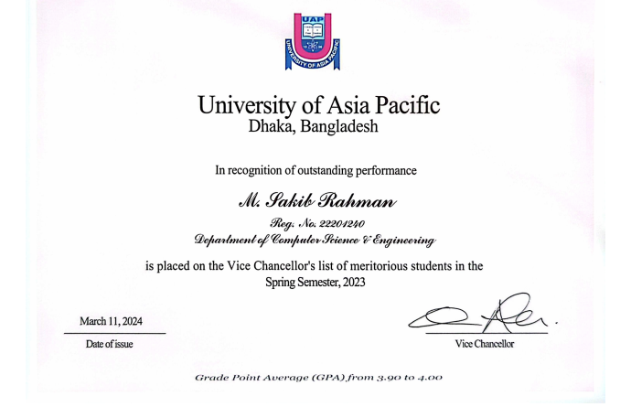
Vice Chancellor’s Award (2 Times)
Honored twice for exceptional academic excellence and overall performance at the university level.
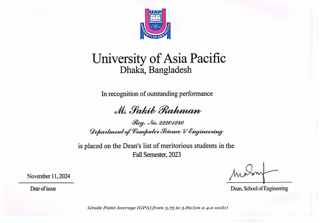
Dean’s Award (3 Times)
Received three times for outstanding academic achievement in the CSE department.
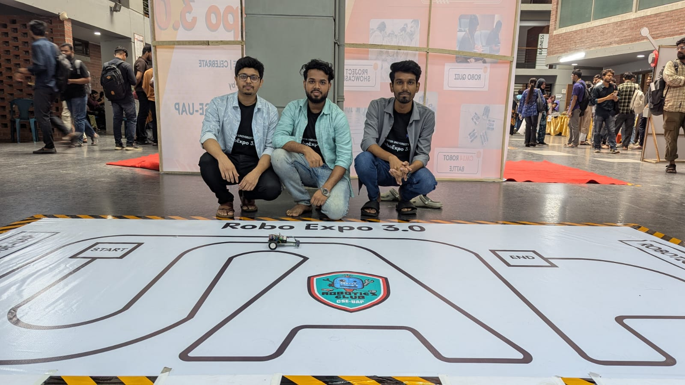
Robo Expo 3.0
Participated in Robo Expo 3.0, showcasing innovative robotic solutions and 2nd place in the LFR contest.
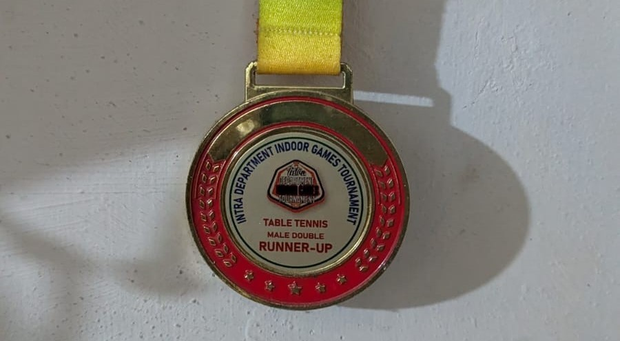
Table Tennis Runner-Up
Secured 2nd position in the university campus table tennis sports competition.
Carrom Championship Winner
Achieved 1st place in the school-level carrom sports competition.
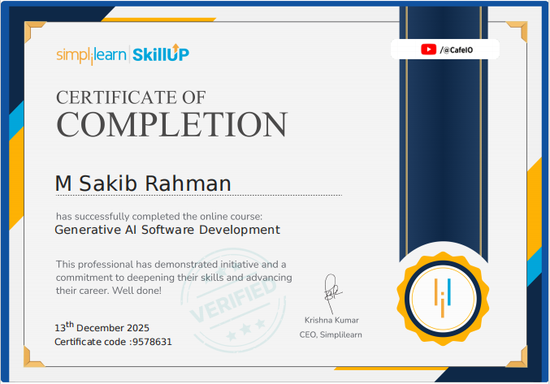
Generative AI Software Development
Developed innovative software solutions using generative AI technologies.
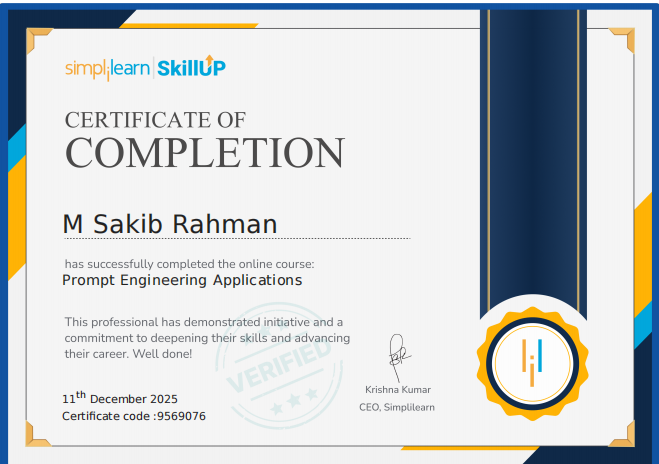
Prompt Engineering Application
Applied prompt engineering techniques to optimize the performance of generative AI models.
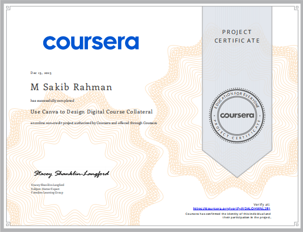
Use Canva to Design Digital Course Collateral
Utilized Canva to create engaging digital course materials and promotional assets.
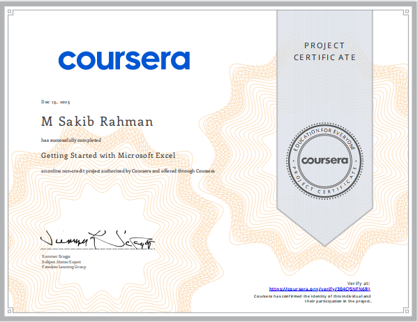
Getting Started with Microsoft Excel
Developed proficiency in using Microsoft Excel for data analysis and visualization.
All Achievements
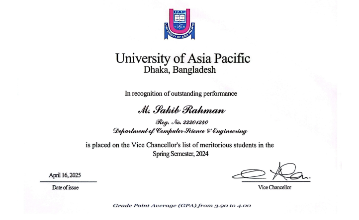
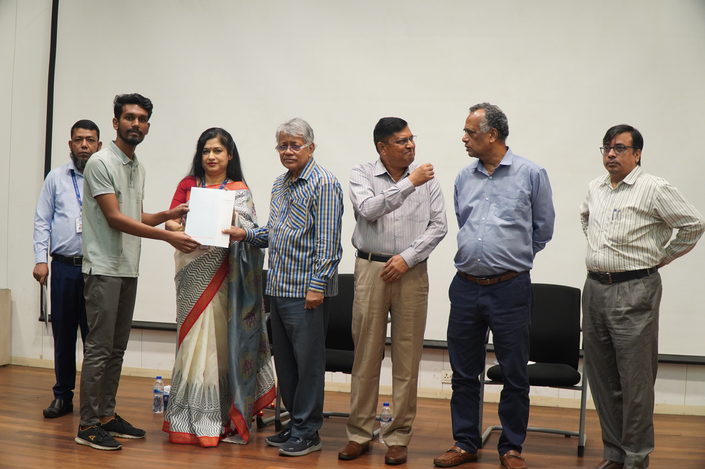
Vice Chancellor’s Award
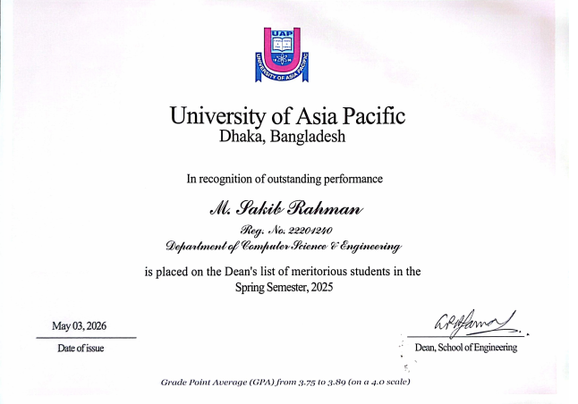
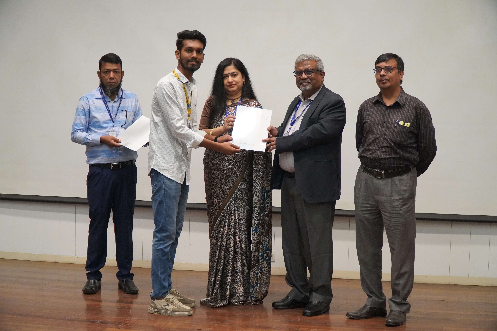
Dean’s Award
Table Tennis Runner-Up
Carrom Championship Winner
Generative AI Software Development
Getting Started with Microsoft Excel
Prompt Engineering Application
Use Canva to Design Digital Course Collateral
Frequently Asked Questions
Motivated and detail-oriented CSE student with strong skills in full-stack development, backend engineering, data communication, and networking. Experienced in Django, Next.js, Express.js, and React Native. Skilled in building real-world applications, developing REST APIs, and designing databases. Strong understanding of networking concepts with hands-on experience using Cisco Packet Tracer. Passionate about creating scalable systems and solving real-world problems through technology.
HireYourWheels – Car Hiring Web Application (Django)
A feature-rich car rental platform with OTP verification, custom user model, reservation
system, and
admin dashboard.
🔗 GitHub: https://github.com/MSakibR/HireYourWheels
Easy Hisab – Invoice & GST Automation Web App (Next.js + Django API)
Automated invoicing platform with tax calculations, customer management, product catalog,
and
reporting dashboard.
🔗 GitHub: https://github.com/MSakibR/Easy_Hisab
NoteMan – Educational Note Sharing System (Next.js + React Native)
A platform for schools/colleges to upload and distribute notes, study materials, and
documents.
🔗 GitHub: https://github.com/MSakibR/Note_Man-Nextjs
🔗 GitHub: https://github.com/MSakibR/Note_Man-React_Native
UCAM System – University Automation (Java + JavaFX)
A GUI-based university class automation system with record management and admin
features.
🔗 GitHub: https://github.com/MSakibR/Ucam_System_using_JavaFX
Travel Agency Management System (C++)
Console-based travel booking system with package selection and billing.
🔗 GitHub: https://github.com/MSakibR/Travel_Agency
Microcontroller Projects – Embedded Systems & IoT Development
Hands-on microcontroller projects using Arduino and ESP32, including sensor integration,
automation,
and real-time monitoring systems.
🔗 GitHub: https://github.com/MSakibR/Microcontroller
Programming Languages: Java, Python, C & C++, JavaScript
Database Technologies: MySQL, MS SQL, MongoDB
Frameworks: Django, Next.js, Express.js, React Native
Libraries & Tools: Jupyter Notebook, Conda, Cisco Packet Tracer, React, Tailwind CSS, JavaFX, Selenium, Postman, LaTeX
Other Skills: OOP, DSA, Software Design Patterns, Microcontrollers & IoT Development, Git & GitHub, Project Management, Teamwork, Leadership
Phone: +8801981410182
Email: sakib.rahman.arfin@gmail.com
Portfolio: msakibr.github.io
GitHub: github.com/msakibr
Address: 58/A, Lake Circus Road, Dhanmondi, Dhaka
Exploring new places through travel, capturing moments with photography, enjoying strategic and adventure games, and staying active with my favorite sport — cricket.